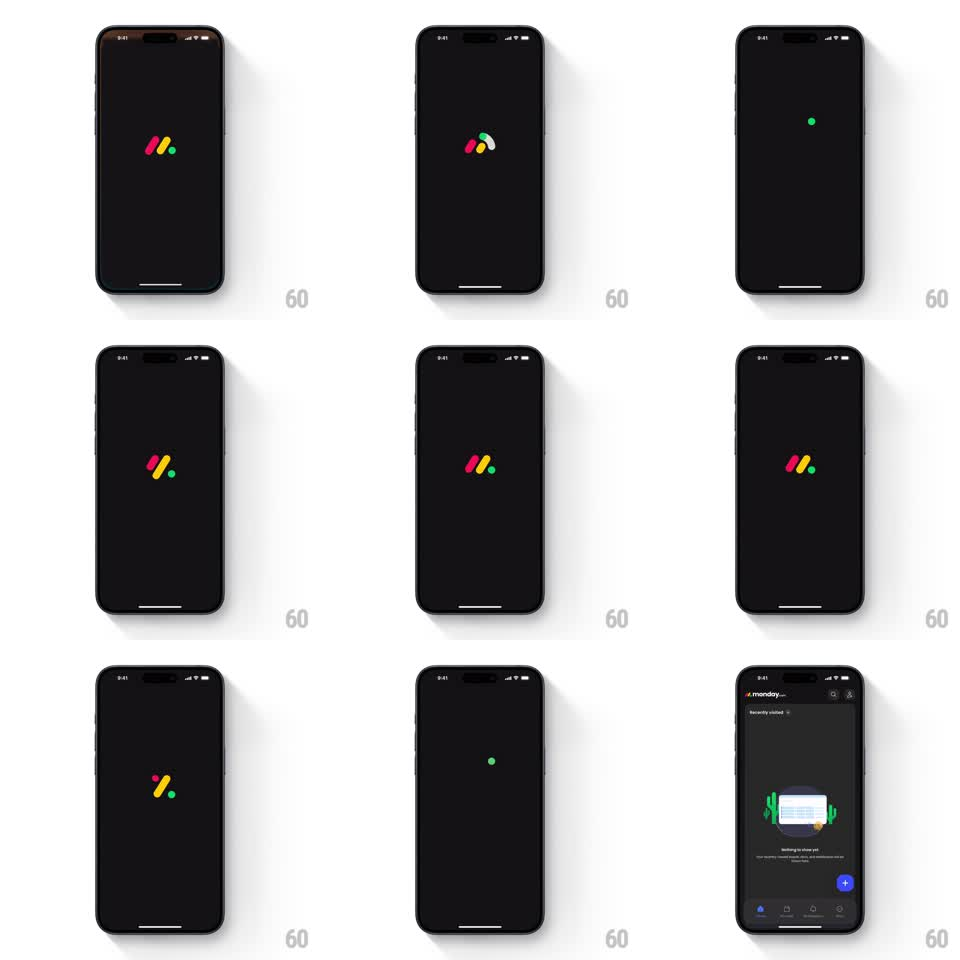

Media
Frame-by-frame

Rebuild this animation 1:1: monday.com's splash - the three-bar "M" logo juggles its colored bars on black, then opens the app through a scaling circular reveal.

Rebuild this animation 1:1: monday.com's splash - the three-bar "M" logo juggles its colored bars on black, then opens the app through a scaling circular reveal. ## Integration Integration: stack-agnostic spec - springs given as stiffness/damping, timed motions as duration + curve; map every value to your framework and animation library of choice. ## Scene Black screen. Center: the monday mark - two slanted bars (pink/red and yellow) plus a green dot. The pieces scramble playfully: bars swap places, the dot jumps, the mark tumbles. Finally a circle expands from center to reveal the monday home screen (Recently visited, empty-state illustration, blue FAB). ## Motion spec Pattern: logo juggling morph + circular reveal. - The mark's pieces animate independently: bars rotate and trade positions (spring ~300/22 each, offset 80ms), the green dot hops to its alternate spot with a bounce (spring ~380/20); the sequence cycles through 2-3 arrangements of the same pieces. - Each arrangement holds ~250ms - enough to read as intentional juggling, not a glitch. - Final arrangement: the classic "M". It holds (~300ms), then a circular mask centered on the logo scales from 0 to full-screen (450ms, ease-in-out), revealing the app UI underneath. - The revealed home screen is already laid out - no additional stagger after the wipe; the reveal is the entrance. ## Calibration - Pieces keep their exact brand colors through every scramble - the juggling rearranges geometry, never color. - The circular reveal center is the logo's center; the eye should land in the app where the logo was. ## Reduced motion Logo fades; simple circular reveal without juggling. ## Don't miss - The bars are rounded-end capsules at a slant - monday's exact geometry, not generic rectangles. - The dot is a perfect circle, smaller than the bar width; its hop is the most playful beat - give it the bounciest spring.